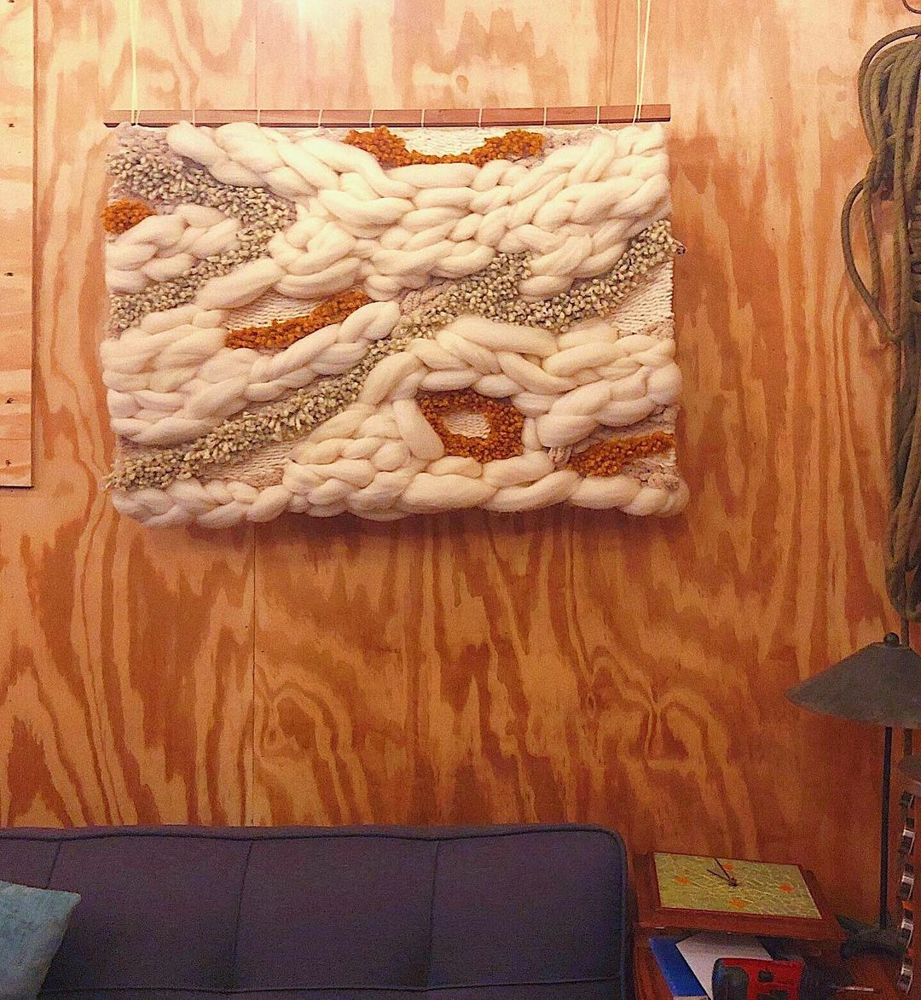

Physical Projects
Tinkering with Fiber Arts and Wood
It seems like everyone picked up quarantine hobbies during the COVID-19 pandemic. Mine were fiber arts and wood projects. The former was spurred by a sudden increase in binge-watching shows after a friend gifted me her TV -- I quickly realized I need to do something with my hands while watching so I didn't feel guilty "wasting my time". Turns out the answer was a whole lotta yarn (and a whole lotta Michael's Rewards Points).
My first wood project was my climbing wall, by far my most daunting and rewarding project. That led to a few smaller projects which I've also documented here.
I call this entire process "tinkering" because I approach this as a casual and admittedly amateur form of experimentation, but I've thoroughly enjoyed the process of getting thoughts out of my head and making real, tangible things.
My first wood project was my climbing wall, by far my most daunting and rewarding project. That led to a few smaller projects which I've also documented here.
I call this entire process "tinkering" because I approach this as a casual and admittedly amateur form of experimentation, but I've thoroughly enjoyed the process of getting thoughts out of my head and making real, tangible things.

Pilot
The project that started it all. And by "it", I mean a newfound yarn obsession
Fiber Arts

Climbing Wall
The hardest thing I've ever done and the proudest I've ever been! My personal free-standing woody
Wood

Flow
Weaving inspired by the flow of water and sand mixing on the beach
Fiber Arts

Color Factory
An introduction to punch needling where, as expected, I dive right in with a large-scale project
Fiber Arts

Geode
A weaving exploration in texture
Fiber Arts

Wedge
A coffee table held together by its own parts (and no hardware!)
Wood

Rose Garden
"Wake up and smell the flowers", they say. As someone with the opposite of a green thumb, a headboard representing a rose garden is the closest I'll get
Fiber Arts

Clouds
A whimsical weaving inspired by cotton-candy skies in San Diego
Fiber Arts

Candy Dots
A bobble blanket that took a long time, partly due to my slow speed but also due to craft stores running out of the colors I needed (which I guess is also my fault)
Fiber Arts